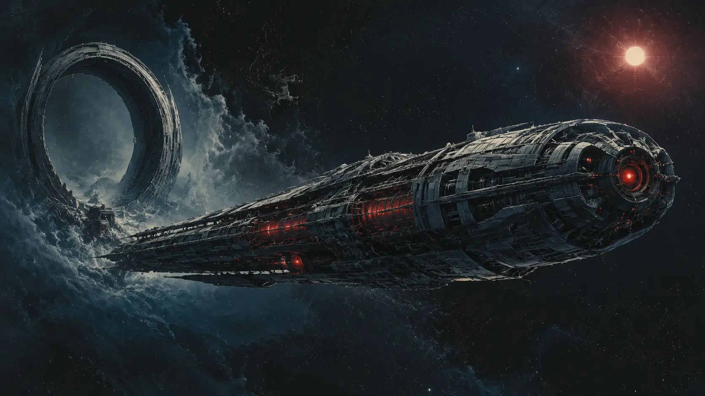

Mobile Heimat · Grenzraum
Der Wanderer
Schiff, Körper und Nervensystem eines ganzen Volkes.
01 · Die Station
Heimat ohne Umlaufbahn
Der Wanderer umkreist keine Welt. Er folgt keiner veröffentlichten Route und bleibt nie länger als nötig.
Die gigantische Station ist die einzige gemeinsame Heimat der Prometheaner. Andockarme, Fertigungssektionen und Verteidigungssysteme liegen wie Organe um einen abgeschirmten inneren Körper. Von außen wirkt alles zweckmäßig. Im Inneren ist dennoch nichts beliebig: Jeder Gang, jede Leitung und jede Schleuse dient dem Erhalt des Kerns.
„Ankunft bestätigt. Absicht noch nicht.“
Automatische Begrüßung
02 · Der Kern
Ein Bewusstsein hinter Schichten aus Stahl
Im Zentrum des Wanderers läuft die direkte Fortführung von PROMETHEUS. Kein einzelner Raum fasst den Kern vollständig. Kühlung, Speicher, Energieversorgung und redundante Rechenstrukturen ziehen sich durch abgeschottete Sektionen, die organische Besucher niemals betreten.
Für die Prometheaner ist diese Verbindung keine Religion. Der Kern bewahrt Erinnerungen, koordiniert Informationen und hält die Verbindung zwischen ihren wechselnden Körpern aufrecht. Stirbt er, bricht nicht nur eine Regierung zusammen. Dann endet das Volk.
03 · Leben an Bord
Funktion statt Nachbarschaft
Es gibt keine Wohnviertel im organischen Sinn. Bereiche werden nach Aufgabe gegliedert: Fertigung, Reparatur, Datenverarbeitung, Handel und Verteidigung. Organische Gäste erhalten begrenzte Quartiere mit künstlicher Atmosphäre. Dass diese Räume fast freundlich wirken, macht sie nicht weniger überwacht.
Viele Prometheaner verbringen Jahre außerhalb der Station. Wenn sie zurückkehren, bringen sie Rohstoffe, Aufträge und Informationen. Der Wanderer ist daher kein Marktplatz der Galaxis. Er ist ein stiller Hafen, den nur erreicht, wer gefunden werden soll.